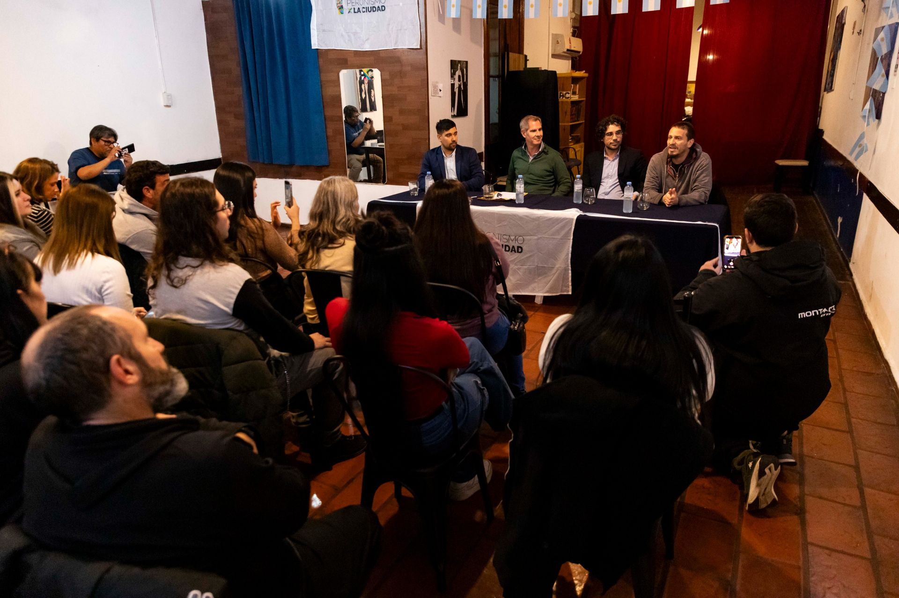
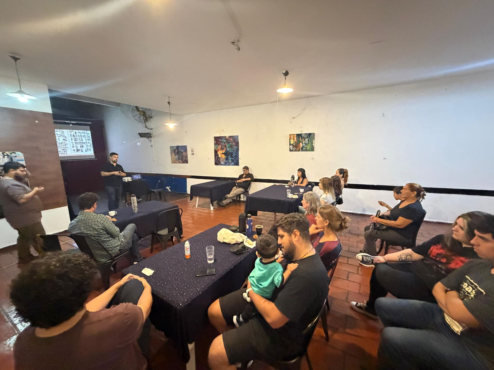
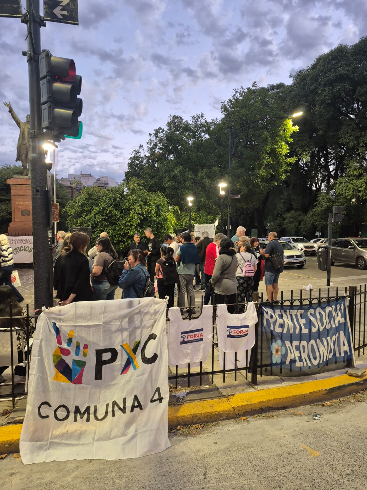

Lunes
18:30 a 20:00 hs
Apoyo escolarGratuito, para primaria. Docente: Darío
18:30 a 20:00 hs
18:00 hs
18:00 a 19:30 hs
18:00 a 20:00 hs
Raíces es un espacio cultural abierto al barrio. Acá conviven talleres, charlas, muestras y publicaciones.



Textos y documentos del espacio, del más reciente al más antiguo.
Lavardén 188, Parque Patricios, Buenos Aires.